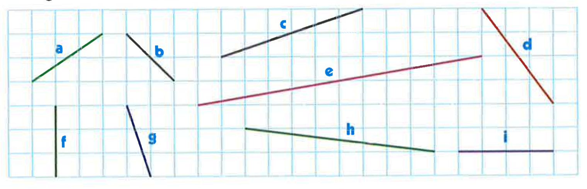
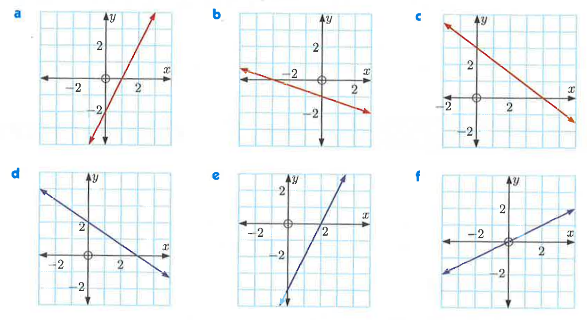
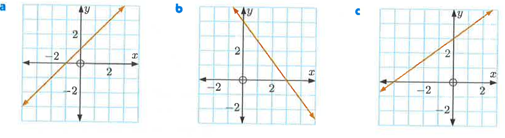
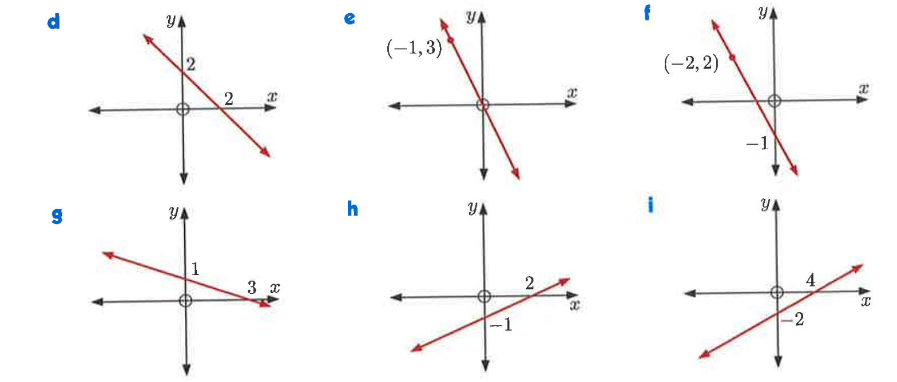

Matematika SMP
Persamaan Garis Lurus
- 1. Pengertian Persamaan Garis Lurus
- 2. Bentuk umum dari persamaan garis lurus
- 3. Gradien Garis Lurus
- 4. Menentukan Persamaan Garis Lurus
- Latihan
1. Pengertian Persamaan Garis Lurus
Persamaan garis lurus adalah persamaan yang menggambarkan hubungan antara koordinat \( x \) dan \( y \) dalam suatu bidang kartesius sehingga membentuk garis lurus.
2. Bentuk umum dari persamaan garis lurus
\[ y = mx + c \]
dengan:
- \(m\) = gradien (kemiringan) garis
- \(c\) = titik potong garis dengan sumbu \(y\) (intersep \( y \))
Bisa juaga disajikan dalam bentuk
\[ ax+by+c=0\]
dengan:
- \(a,b,c\) adalah konstanta
- \(x,y\) adalah variabel
Contoh Soal:
Tentukan apakah persamaan berikut merupakan persamaan garis lurus atau bukan. Jika bukan, berikan alasannya!
- \( y = 5x - 2 \)
- \( x^2 + y = 9 \)
- \( x + 4y = 10 \)
Pembahasan:
1. \( y = 5x - 2 \)
Bentuk persamaan ini adalah \( y = mx + c \), yang merupakan bentuk umum persamaan garis lurus. Oleh karena itu, ini adalah persamaan garis lurus.
2. \( x^2 + y = 9 \)
Jika kita ubah menjadi \( y = 9 - x^2 \), terlihat bahwa ada suku \( x^2 \) yang menunjukkan bahwa ini adalah persamaan kuadratik (parabola), bukan garis lurus.
3. \( x + 4y = 10 \)
Jika kita ubah bentuknya menjadi \( y = -\frac{1}{4}x + \frac{10}{4} \), ini sesuai dengan bentuk \( y = mx + c \), sehingga ini adalah persamaan garis lurus.
Interaktif Persamaan Garis Lurus: y = mx + c
0
3. Gradien Garis Lurus
Gradien atau kemiringan garis lurus adalah ukuran kecondongan garis terhadap sumbu \( x \). Gradien dinotasikan dengan \( m \) dan dapat dihitung dengan rumus:
\[ m = \frac{y_2 - y_1}{x_2 - x_1} \]
dengan:
- \( (x_1, y_1) \) dan \( (x_2, y_2) \) adalah dua titik pada garis lurus
3.1 Sifat Gradien
Gradien garis memiliki beberapa sifat:
- Jika \( m > 0 \), garis miring ke atas (searah jarum jam).
- Jika \( m < 0 \), garis miring ke bawah (berlawanan arah jarum jam).
- Jika \( m = 0 \), garis sejajar dengan sumbu \( x \) (garis horizontal).
- Jika gradien tidak terdefinisi (\( x_1 = x_2 \)), garis sejajar dengan sumbu \( y \) (garis vertikal).
3.2 Gradien dari Persamaan Garis
Gradien dapat ditentukan dari persamaan garis lurus dalam bentuk:
\[ y = mx + c \]
Di mana:
- \( m \) adalah gradien
- \( c \) adalah titik potong garis dengan sumbu \( y \)
Jika diberikan persamaan dalam bentuk umum \( ax + by + c = 0 \), maka gradiennya dapat dihitung dengan:
\[ m = -\frac{a}{b} \]
Contoh Soal:
Tentukan gradien dari garis berikut:
- Garis yang melalui titik \( (2,3) \) dan \( (5,9) \).
- Persamaan garis \( y = -3x + 7 \).
- Persamaan garis \( 2x + 5y - 10 = 0 \).
Pembahasan:
1. Garis melalui \( (2,3) \) dan \( (5,9) \)
Gunakan rumus gradien:
\[ m = \frac{y_2 - y_1}{x_2 - x_1} = \frac{9 - 3}{5 - 2} = \frac{6}{3} = 2 \]
2. Persamaan garis \( y = -3x + 7 \)
Karena sudah dalam bentuk \( y = mx + c \), maka gradiennya adalah \( m = -3 \).
3. Persamaan garis \( 2x + 5y - 10 = 0 \)
Ubahlah menjadi bentuk \( y = mx + c \):
\[ 5y = -2x + 10 \]
\[ y = -\frac{2}{5}x + 2 \]
Sehingga gradiennya adalah \( m = -\frac{2}{5} \).
4. Menentukan Persamaan Garis Lurus
Untuk menentukan persamaan garis lurus, kita dapat menggunakan beberapa metode tergantung informasi yang diberikan.
4.1 Jika Diketahui Gradien dan Titik
Jika diketahui gradien \( m \) dan titik \((x_1, y_1)\), maka persamaan garis dapat dicari dengan rumus:
\[ y - y_1 = m (x - x_1) \]
Contoh Soal:
Diketahui garis memiliki gradien \( m = 3 \) dan melalui titik \( (2,5) \), maka:
Pembahasan:
- \( y - 5 = 3(x - 2) \)
- \( y - 5 = 3x - 6 \)
- \( y = 3x - 6 + 5\)
- \( y = 3x - 1 \)
4.2 Jika Diketahui Dua Titik
Jika diketahui dua titik \((x_1, y_1)\) dan \((x_2, y_2)\), kita bisa menentukan gradien terlebih dahulu dengan rumus:
\[ \frac{y - y_1}{y_2 - y_1} = \frac{x - x_1}{x_2 - x_1} \]
Contoh Soal:
Tentukan persamaan garis yang melalui titik \( (1,3) \) dan \( (4,9) \)!
Pembahasan:
- masukan titik \( (1,3) \) dan \( (4,9) \) kedalam rumus \[ \frac{y - y_1}{y_2 - y_1} = \frac{x - x_1}{x_2 - x_1} \]
- \[ \frac{y - 3}{9 - 3} = \frac{x - 1}{4 - 1} \]
- \[ \frac{y - 3}{6} = \frac{x - 1}{3} \]
- \[ 3(y - 3) = 6(x - 1) \]
- \[ 3y - 9 = 6x - 6 \]
- \[ 3y = 6x - 6 + 9 \]
- \[ 3y = 6x + 3 \]
- di bagi 3 semuanya \( y = 2x + 1 \)
4.3 Jika Diketahui Persamaan Garis Sejajar atau Tegak Lurus
- Dua garis dikatakan sejajar jika memiliki gradien yang sama atau
- Dua garis dikatakan tegak lurus jika hasil kali gradiennya -1 atau
\[ m_1=m_2 \]
\[ m_1 \times m_2 = -1 \]
Contoh Soal:
Tentukan persamaan garis yang sejajar dengan \( y = 3x + 5 \) dan melalui titik \( (2,4) \).
Pembahasan:
- Gradien garis yang sejajar adalah \( m = 3 \)
- Gunakan rumus: \( y - 4 = 3(x - 2) \)
- \( y - 4 = 3x - 6 \)
- \( y = 3x - 2 \)
Latihan
Soal 1
Tentukan gradien dari setiap gambar garis berikut:

tulis INFINIT di kotak jawaban jika gradien tak hingga
a. \(m = \)
b. \(m = \)
c. \(m = \)
d. \(m = \)
e. \(m = \)
f. \(m = \)
g. \(m = \)
h. \(m = \)
i. \(m = \)
Soal 2
\[m=\frac{y_2 - y_1}{x_2 - x_1}\]
Tentukan gradien garis yang melalui titik:
a. \((0,0)\) dan \((2,6)\) \(m = \)
b. \((2,3)\) dan \((5,9)\) \(m = \)
c. \((4,5)\) dan \((4,8)\) \(m = \)
d. \((1,7)\) dan \((3,7)\) \(m = \)
e. \((-1,2)\) dan \((3,-6)\) \(m = \)
f. \((0,4)\) dan \((4,0)\) \(m = \)
g. \((-2,-3)\) dan \((2,1)\) \(m = \)
h. \((3,6)\) dan \((6,3)\) \(m = \)
i. \((5,2)\) dan \((10,4)\) \(m = \)
j. \((0,1)\) dan \((2,5)\) \(m = \)
k. \((3,-2)\) dan \((6,4)\) \(m = \)
l. \((-3,1)\) dan \((0,7)\) \(m = \)
Soal 3
\[y=mx+c\]
Tentukan gradien persamaan garis lurus berikut:
a. \(y=3x-2\)
b. \(y=-4x+7\)
c. \(y=\frac{1}{2}x+5\)
d. \(y=-\frac{3}{4}x-1\)
e. \(y=x+4\)
f. \(y=-2x\)
g. \(y=0.25x-1\)
h. \(y=-x+9\)
i. \(y=5x+0\)
j. \(y=-6x+2\)
Soal 4
\[ax+by+c=0\]\[m=-\frac{a}{b}\]
Tentukan gradien persamaan garis lurus berikut:
a. \(6x - 2y - 5 = 0\)
b. \(4x + y - 2 = 0\)
c. \(-3x + 2y - 6 = 0\)
d. \(5x - y - 10 = 0\)
e. \(x + 3y = 0\)
f. \(2x + 5y - 7 = 0\)
g. \(7x - y + 14 = 0\)
h. \(5x + 2y - 1 = 0\)
i. \(x - y = 0\)
j. \(3x + 6y - 9 = 0\)
Soal 5
\[m_2=m_1\]
Tentukan gradien yang sejajar dengan:
a. Garis yang melalui titik \((2, 4)\) dan \((5, 10)\)
b. Garis dengan persamaan \(3x - y = 6\)
c. Garis yang melalui titik \((1, -2)\) dan \((4, -2)\)
d. Garis yang memiliki gradien \(-\frac{2}{3}\)
e. Garis dengan persamaan \(y = \frac{4}{5}x - 7\)
f. Garis yang melalui titik \((0, 0)\) dan \((3, -6)\)
g. Garis dengan persamaan \(2y = 8x + 1\)
h. Garis yang melalui titik \((1, 1)\) dan \((4, 10)\)
i. Garis yang memiliki gradien \( - 1 \)
j. Garis yang melalui titik \((-2, 5)\) dan \((1, -1)\)
k. Garis dengan persamaan \(5x - y + 3 = 0\)
l. Garis yang melalui titik \((6, -2)\) dan \((9, 1)\)
Soal 6
\[m_2=-\frac{1}{m_1}\]
Tentukan gradien yang tegak lurus dengan :
a. Garis yang melalui titik \((2,4)\) dan \((0,0)\)
b. Garis \(y = -3x + 1\)
c. Garis \(x - 2y = 6\)
d. Garis \(2y = 5x + 1\)
e. Garis \(3x + y - 4 = 0\)
f. Garis \(y = \frac{4}{5}x - 3\)
g. Garis \(2x - y = 8\)
h. Garis dengan gradien \(m = 7\)
i. Garis \(y = -2x + 4\)
j. Garis \(4y = -x + 8\)
k. Garis yang melalui titik \((3,2)\) dan \((7,4)\)
l. Garis yang melalui titik \((-1,5)\) dan \((3,-3)\)
Soal 7
\[y-y_1=m \cdot (x-x_1)\]
Tentukan Persamaan garis yang:
Tulis jawaban dalam bentuk y=mx+c
a. melalui titik \((0,1)\) dan memiliki gradien m=2
b. melalui titik \((1,3)\) dan memiliki gradien m=1
c. melalui titik \((2,-1)\) dan memiliki gradien m=3
d. melalui titik \((4,2)\) dan memiliki gradien m=-2
e. melalui titik \((5,5)\) dan memiliki gradien m=0
f. melalui titik \((1,-2)\) dan memiliki gradien m=4
g. melalui titik \((3,0)\) dan memiliki gradien m=-1
h. melalui titik \((0,-4)\) dan memiliki gradien m=5
i. melalui titik \((-2,3)\) dan memiliki gradien m=1
j. melalui titik \((2,1)\) dan memiliki gradien m=-3
k. melalui titik \((1,1)\) dan memiliki gradien m=½
l. melalui titik \((0,0)\) dan memiliki gradien m=3
Soal 8
\[y-y_1=m \cdot (x-x_1)\]
Tentukan Persamaan garis yang:
a. melalui titik \((0,1)\) dan sejajar dengan garis \(y=2x-3\)
b. melalui titik \((2,3)\) dan tegak lurus dengan garis \(y=2x-5\)
c. melalui titik \((1,-2)\) dan sejajar dengan garis \(y=-x+1\)
d. melalui titik \((-3,2)\) dan tegak lurus dengan garis \(y=-x+4\)
e. melalui titik \((2,-1)\) dan sejajar dengan garis \(y=\frac{1}{2}x+3\)
f. melalui titik \((-2,5)\) dan tegak lurus dengan garis \(y=4x+1\)
g. melalui titik \((1,1)\) dan sejajar dengan garis \(y=-\frac{3}{4}x+2\)
h. melalui titik \((0,3)\) dan tegak lurus dengan garis \(y=-\frac{2}{3}x+4\)
i. melalui titik \((4,-2)\) dan sejajar dengan garis \(y=\frac{2}{5}x-1\)
j. melalui titik \((-1,4)\) dan tegak lurus dengan garis \(y=-3x+5\)
Soal 9
1. Titik potong sumbu-x \(\Rightarrow y=0\)
2. Titik potong sumbu-y \(\Rightarrow x=0\)
Tentukan titik potong sumbu-x dan sumbu-y dari Persamaan garis berikut:
contoh penulisan jawaban (2, 3)
a. \(y = 2x - 4\)
i) Titik potong sumbu-x
ii) Titik potong sumbu-y
b. \(y = -x + 3\)
i) Titik potong sumbu-x
ii) Titik potong sumbu-y
c. \(-3x + y = 6\)
i) Titik potong sumbu-x
ii) Titik potong sumbu-y
d. \(x + 2y + 2 = 0\)
i) Titik potong sumbu-x
ii) Titik potong sumbu-y
e. \(y = x - 2\)
i) Titik potong sumbu-x
ii) Titik potong sumbu-y
f. \(y = -2x + 8\)
i) Titik potong sumbu-x
ii) Titik potong sumbu-y
g. \(y = 4x - 2\)
i) Titik potong sumbu-x
ii) Titik potong sumbu-y
h. \(2y = -3x + 6\)
i) Titik potong sumbu-x
ii) Titik potong sumbu-y
i. \(5x - 5y + 25= \)
i) Titik potong sumbu-x
ii) Titik potong sumbu-y
j. \(y = -x - 6\)
i) Titik potong sumbu-x
ii) Titik potong sumbu-y
Soal 10
Tentukan titik potong sumbu-x dan sumbu-y dari gambar berikut:

contoh penulisan jawaban (2, 3)
a. i) Titik potong sumbu-x
ii) Titik potong sumbu-y
b. i) Titik potong sumbu-x
ii) Titik potong sumbu-y
c. i) Titik potong sumbu-x
ii) Titik potong sumbu-y
d. i) Titik potong sumbu-x
ii) Titik potong sumbu-y
e. i) Titik potong sumbu-x
ii) Titik potong sumbu-y
f. i) Titik potong sumbu-x
ii) Titik potong sumbu-y
Soal 11
Perhatikan gambar berikut:

Untuk soal no 11a-11c
Tentukan:
a. i) Gradien \(m=\)
ii) Titik potong sumbu-y \((0, c)\)
iii) Persamaan garis
b. i) Gradien \(m=\)
ii) Titik potong sumbu-y \((0, c)\)
iii) Persamaan garis
c. i) Gradien \(m=\)
ii) Titik potong sumbu-y \((0, c)\)
iii) Persamaan garis

Untuk soal no 11d-11i
Tentukan:
- i. Gradien garis
- ii. Titik potong sumbu-y (nilai c)
- iii. Persamaan garis
d. i) \(m=\)
ii) \(c=\)
iii) \(y=\)
e. i) \(m=\)
ii) \(c=\)
iii) \(y=\)
f. i) \(m=\)
ii) \(c=\)
iii) \(y=\)
g. i) \(m=\)
ii) \(c=\)
iii) \(y=\)
h. i) \(m=\)
ii) \(c=\)
iii) \(y=\)
i. i) \(m=\)
ii) \(c=\)
iii) \(y=\)